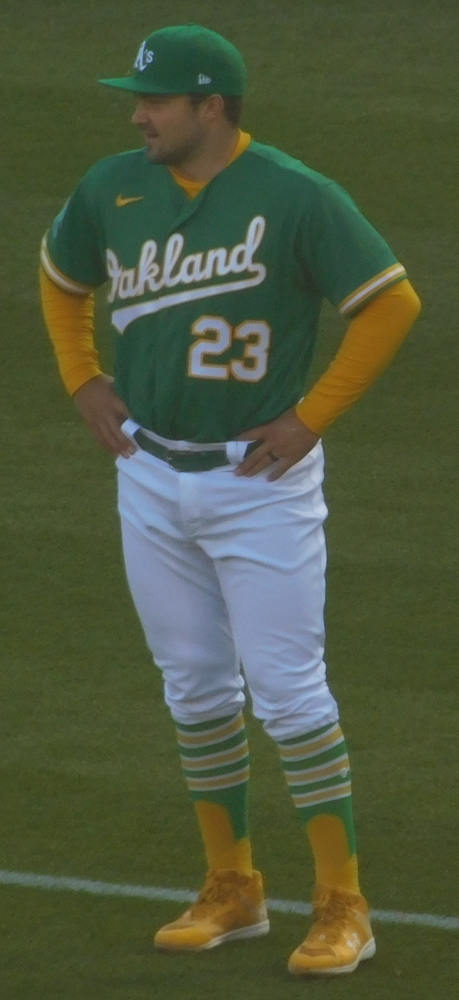
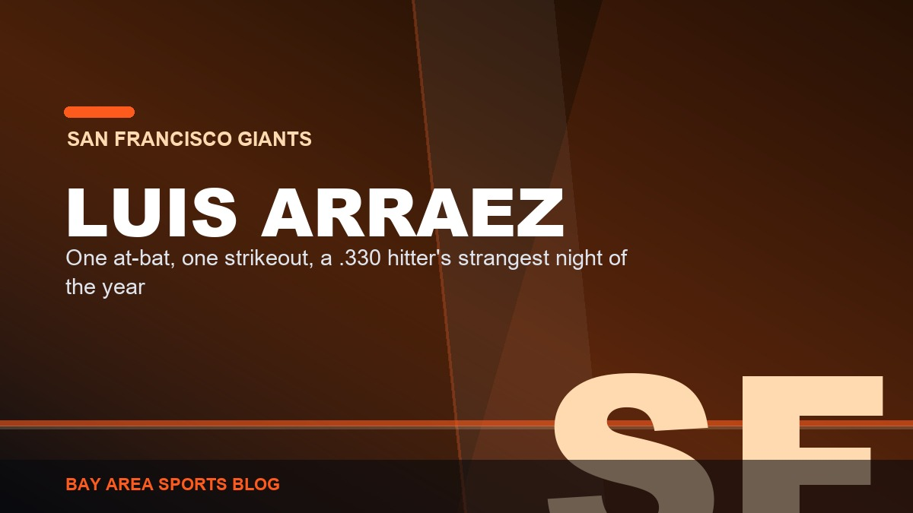

Bay Area at the 2026 All-Star Game: Shea Langeliers Reached Twice, Luis Arraez Got One Swing, and Logan Webb Never Threw a Pitch
The American League shut out the National League 4-0 in Philadelphia, and our three guys had three completely different nights. One of them was in the middle of everything. One of them got eleven seconds of screen time. One of them watched in a jersey he never got dirty.

The game itself was over in twenty minutes
Let's set the table, because the Midsummer Classic did not exactly go the long way around. The American League put a three spot on the board in the first inning and never looked back, winning 4-0 at Citizens Bank Park in Philadelphia. Seven hits for the AL, two for the National League. Two. The NL struck out fourteen times and never got a runner across in nine innings, which is a hilarious thing to watch happen to a lineup with Kyle Schwarber, Juan Soto and Freddie Freeman in it. If you fell asleep after the first inning, congratulations, you saw the whole game.
Cristopher Sanchez took the ball for the NL in his own ballpark and struck out Mike Trout to open the thing, which had the Philly crowd feeling great about themselves for roughly ninety seconds. Then he loaded the bases, and Cody Bellinger dropped a two-run single up the middle, and Ben Rice tacked on another with a single of his own, and it was 3-0 before anybody found their seats. Miguel Vargas added a 433-foot souvenir in the eighth to make it four. Dylan Cease started for the AL and immediately punched out Schwarber, Soto and Abrams. That was the ballgame.
Now here is why we care, because we are not a neutral outlet and never pretend to be. Three of our guys were in that building wearing All-Star uniforms, and the way they spent the night tells you almost everything about where the Giants and the A's actually are in July of 2026.
Shea Langeliers had the night of his life, and I loved every second of it

Start behind the plate. Shea Langeliers, first All-Star selection of his career, was the American League's starting catcher in the Midsummer Classic. Not a late-inning replacement, not a courtesy nod at the bottom of the roster. He caught the first pitch of the All-Star Game. Let that land for a second, because this is a franchise that has spent two years being a national punchline about ballparks and minor league seating and everything except baseball, and on Tuesday night the guy squatting behind home plate for the entire American League was ours.
He then went out and had a genuinely great night. He walked in that first-inning rally, came around to score on Bellinger's two-run single, and later drove a single to deep right center. One official at-bat, one hit, one walk, one run. He reached base every single time he came up, in a game where the other side managed two hits in nine innings. A .257 hitter on a 41-55 team walked into Philadelphia and put up a 1.000 average and a perfect on-base night on the biggest stage baseball has.
The best part, and I mean this, was Cease and Langeliers getting mic'd up together and just openly discussing what pitch was coming next, out loud, on national television, with no signs at all. It was ridiculous and delightful and it was our catcher at the center of it, running the American League's staff and letting everybody hear him do it. Nobody watching had the slightest idea he plays for the A's. That is fine. He earned the stage and he owned it.
And he earned it the hard way. Langeliers has 21 home runs and 46 RBI in 86 games with an .807 OPS, and going back to the 2025 All-Star break only Kyle Schwarber has hit more homers than he has. Only Schwarber. There is not a qualifying hitter in baseball with a better slugging percentage in that window. He is the single best thing about a team I have spent all summer telling you was a mirage, and he is the reason the second half is watchable at all.
Luis Arraez got one at-bat, and it went badly

Then there is Luis Arraez, and this one stings a little. Fourth All-Star selection of his career, first as a Giant, and he has been exactly the hitter San Francisco paid for. He is batting .330 with a .369 on-base and an .829 OPS, 119 hits, second in the National League in both average and hits, playing a position the front office asked him to learn on the fly. He signed a one-year deal, he moved to second base, and he has been the most reliable at-bat on the roster from April to now.
He got one trip to the plate on Tuesday. He struck out. That is the whole story. The most impossible man in baseball to strike out, the guy who has built an entire career on the idea that the bat always finds the ball, walked up once in the Midsummer Classic and walked back with a K next to his name. Zero for one. In a game where the National League collected two hits and fanned fourteen times, he was one of the fourteen.
It means nothing. I want to be honest about that instead of dressing it up. One at-bat in an exhibition against a parade of relievers throwing 100 with their hair on fire tells you exactly nothing about a hitter who has 119 hits in the bank. But it is a little cruel that the one Giants bat in that lineup got a single swing at the spotlight and it came up empty, on a night when the whole National League looked like it had never seen a fastball. He deserved better than one at-bat. He has deserved better than this whole season, honestly.
Logan Webb never left the bullpen, and that is the right call

And Webb never got up. Third All-Star selection, third straight trip to this game, National League Pitcher of the Month for June, a 3.66 ERA across 15 starts on a team that has given him almost nothing to work with, and he stood in the bullpen in an All-Star uniform and watched nine other guys throw. He did not appear. Not an inning, not a batter, not a pitch.
Here is the thing though: that was by design, and it was the correct decision. Webb is completely healthy. Nothing is wrong with his arm. He is simply lined up to start next weekend in Seattle, and the Giants and Webb decided that a one-inning cameo in an exhibition was not worth touching that. Take the honor, wear the jersey, shake the hands, keep the arm fresh for the games that pay the bills. He made the choice himself.
I would love to have watched him carve up an American League lineup on national TV. Of course I would. Webb has been the most consistently excellent thing this franchise has produced in years and he never gets the national spotlight he has earned, because he pitches for a 41-55 club nobody outside the 415 is watching. But we are 14 games under .500 and headed for a reset at the August 3 deadline, and the single most valuable asset in the organization is Logan Webb's right arm. You do not spend that on a fireworks show. You protect it. Good.
What Tuesday actually told us
Three All-Stars, three completely different nights, and one uncomfortable truth sitting underneath all of it. Both of our baseball teams went into this break at 41-55. Both of them. The Giants and the A's have the identical record, which is the kind of coincidence that would be funny if it were happening to somebody else. Between the two of them they sent three players to Philadelphia, and one of those three did not play, and one of those three got a single at-bat.
Langeliers is the exception and he is the story. He walked into the biggest stage in the sport, started the game, reached base twice, ran the pitching staff, and left without a scratch on his night. That is a legitimately great performance from a Bay Area player at the All-Star Game, and I do not care that his team is bad, and I do not care that he plays in Sacramento right now, and I do not care that half the country still could not tell you what league the A's are in. He was the best Bay Area moment of the night by a mile and he backed it up with a first half that only Kyle Schwarber has out-slugged.
Arraez got robbed of a real showcase by a game that was over in the first inning. Webb made the grown-up choice. And now the break is done, the reset conversation starts for real, and we go back to watching two 41-55 baseball teams try to find something worth keeping. At least we got one night where a guy in our colors was at the center of the whole sport. Take it. It has been a long summer.
More: A's at the Break: 41-55 and the Mirage · Giants at the Break: 41-55 Under Vitello · Casey Schmitt's All-Star Snub · Giants section · A's section